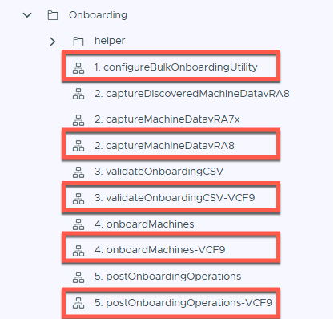
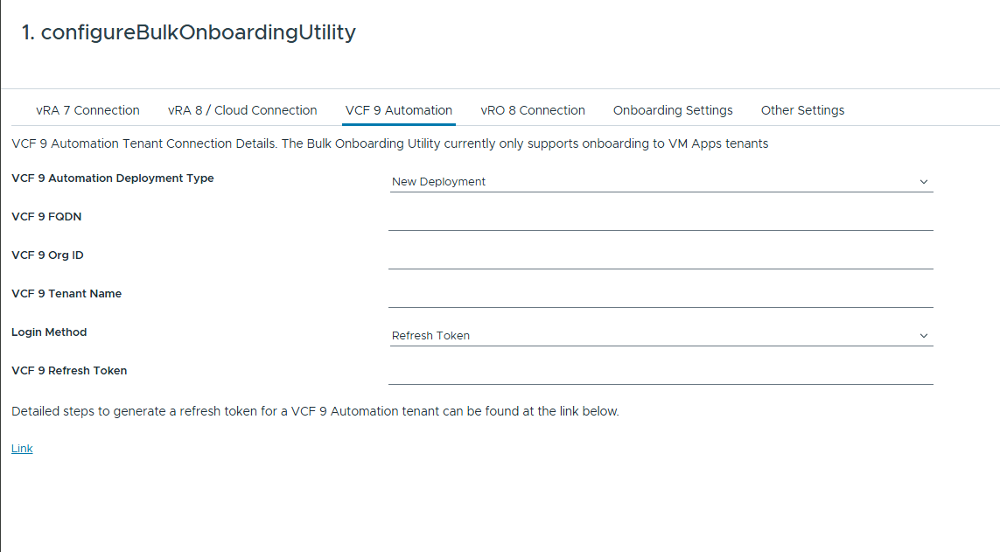

Explore the universe of IT automation, coding, and virtualization
I am excited to announce a major refactor to the Bulk Onboarding utility to bring full support for VCF Automation 9.x environments. With this latest release, you can seamlessly perform bulk onboarding of legacy Aria Automation deployments directly into the target **VCF Automation VM-Apps** organization.
While the underlying operational mechanics remain familiar, dedicated workflows labeled with the -vcf9 suffix have been introduced to handle modern token-based authentication, target validation, and deployment onboarding for VCF 9 targets.
The end-to-end process follows a similar logical path to previous iterations, but requires running the specific -vcf9 workflow variations in place of older versions:
Previous Aria Automation blog post contains detailed steps on all workflows and can be accessed here

1. configureBulkOnboardingUtility: Configure your connection settings. A dedicated tab has been added specifically for VCF 9 Automation.

2. captureMachineDatavRA8 (or legacy source capture equivalent): Gathers inventory data from the source environment.3. validateOnboardingCSV-VCF9: Runs validation checks tailored for VCF 9 target compliance and mapping integrity.4. onboardMachines-VCF9: Executes the primary onboarding sequence to register workloads under the VCF Automation 9 environment.5. postOnboardingOperations-VCF9: Finalizes post-deployment operational configurations.